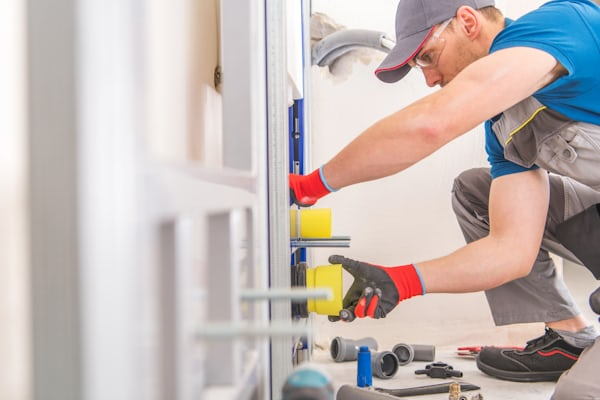

Reliable Residential Water Heaters
Plumber Near Me helps homeowners with sump pump installation, replacement planning, and practical recommendations designed to reduce water risk in basements and lower-level spaces.
Hot Water Focus
Built around basement and lower-level water concerns.
Clear Recommendations
Helpful recommendations for new installs and aging units.
Home-Ready Solutions
A practical service approach focused on dependable performance.
Hot Water Should Stay Reliable
For many homeowners, the lower level of the house is where water concerns show up first. A properly planned sump pump setup can help protect storage areas, finished spaces, and the parts of the home most vulnerable to unwanted moisture.
This service is not only for new systems. It can also help homeowners who are replacing an older pump, improving reliability, or trying to feel more prepared before heavy rain or seasonal water issues create stress.

Basement protection
A sump pump system can help reduce the risk of standing water and repeated lower-level water concerns.
Dependable recommendations
The right approach depends on the home layout, drainage conditions, and how the space is being used.
New systems or replacements
The service can help when the home needs its first sump pump or when an older unit no longer feels reliable.


Comfort Starts With Capacity
Less uncertainty during storms
A dependable system helps homeowners feel more prepared when weather and groundwater conditions change.
Better long-term planning
Installation or replacement decisions can become part of a more complete plan to protect the home over time.
Cleaner next steps
Homeowners should understand what the system is meant to do, when it makes sense to install one, and what kind of follow-up matters later.
A Straightforward Heater Visit
Homeowners usually want to know what problem the system is solving, whether replacement is necessary, and how the setup fits the lower level of the home.
Review the need
Start by discussing what the home is experiencing, how the lower level is used, and whether the issue points toward installation or replacement.
Confirm the plan
Clarify the practical next step, whether that means a new sump pump system, replacing an aging unit, or improving reliability in the space.
Move forward with confidence
The outcome should leave the homeowner feeling better prepared and more confident about protecting the home from lower-level water problems.
Water Heater Questions
The goal here is to make the service easier to understand before the homeowner reaches out or schedules the next step.
When does it make sense to install a sump pump?
Can this page also apply if I already have an older sump pump?
What information should I share when I contact you about a sump pump?
If I am not sure whether I need a sump pump, should I still contact you?
Schedule Water Heater Service
Whether the need is a new sump pump installation or a replacement discussion, the next step is to describe the issue and move toward the right plan for the home.